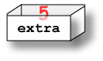
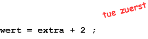
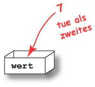

int menge = 7; menge = 13; System.out.println( "menge enthaelt: " + menge );
Antwort:
menge enthaelt : 13
Die Zuweisungsanweisung ersetzt den Wert, der ursprünglich in der Variablen menge enthalten war durch den Wert 13.
int menge = 7; menge = 13; System.out.println( "menge enthaelt: " + menge );
menge enthaelt : 13
Die Zuweisungsanweisung ersetzt den Wert, der ursprünglich in der Variablen menge enthalten war durch den Wert 13.
Angenommen, dass die Variable extra bereits den Wert 5 enthält.

Hier ist eine weitere Anweisung:
wert = extra + 2;
Die Anweisung wird (wie immer) in zwei Schritten durchgeführt. Der erste Schritt führt die Berechnung extra + 2

Das Ergebnis der Berechnung ist 7. Der zweite Schritt stellt die 7 in die Variable wert:

Was wird das folgende Programm ausgeben:
// Beispiel Zuweisungsanweisungen int extra, wert; extra = 5; wert = extra + 2; System.out.println( "wert enthaelt jetzt: " + wert );